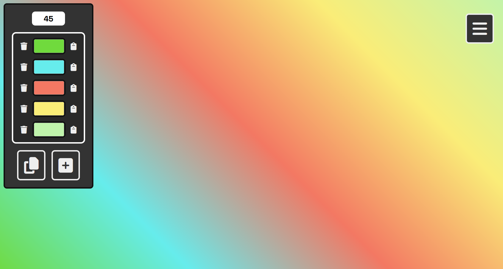
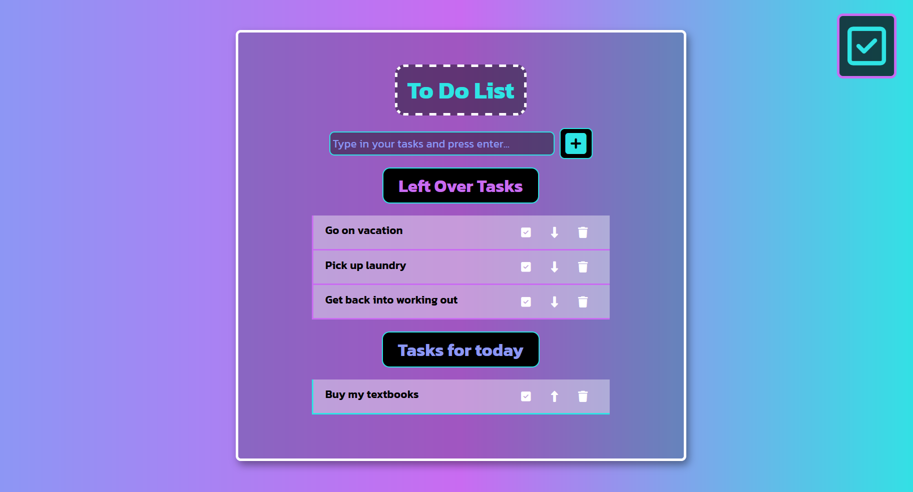
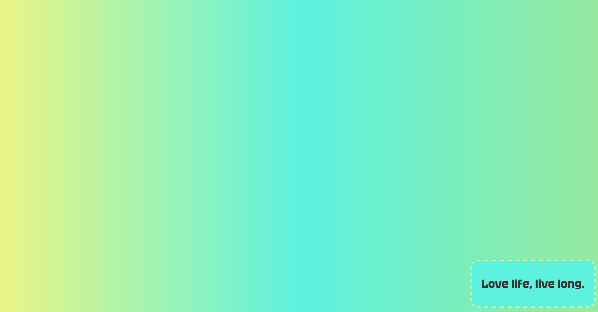

A bit about myself
The start of each new day, is a chance to change something about yourself, a chance to try something new, or the chance to do something different. Life is about trying your hardest, including at trying your hardest. Self motivation is what makes the difference between being happy, and not. I like using the internet in my daily life so I am embarking on an adventure, I want a change, I want to become a web developer.
If I try to learn a bit each day about being a front end web developer, I might manage to start a new career. This site is my homepage and on it I hope to showcase my portfolio as I progress into a web development career. If I could do freelance, I could travel, and if I could travel, I would be happier with my life. A chance at a new beginning is what I am hoping for, a chance to give back to the world wide web which has given me so much.
Projects
Gradient Generator
I hope this background gradient generator can be used as kindling on your next project. Simply put, it is a tool for designing CSS Linear Gradients that can copy colors and copy the proper text so you can include a background gradient in your next CSS file to make your next web project sparkle. It also saves everything in local storage in case you want to tweak a design.
Automatic Todo
Like many projects, this came out of a curiosity stemming from I use Todo List Apps sometimes, and maybe, just maybe, I can use my own. With that in mind I set out to work with the JavaScript, CSS, and HTML and create a simple way to add things to your todo list, only to move them to the later list if necessary. Also, you can check off items and move them to your done list.
Toast Notification
Want a toast to notify a user of something, I started to work on this as another side project but haven’t made much progress due to lack of ideas. It uses JavaScript to pop up a toast, which goes away after a shortwhile with an animation.